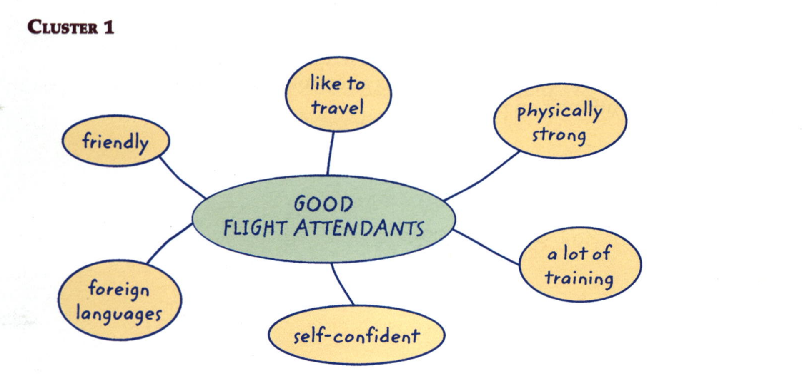
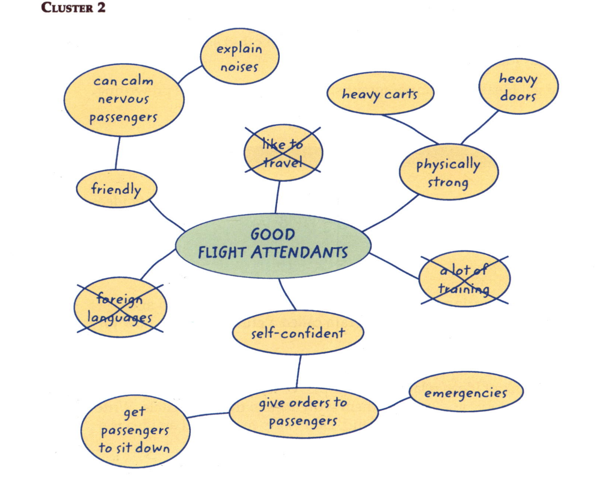
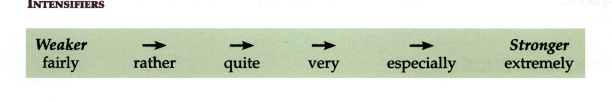
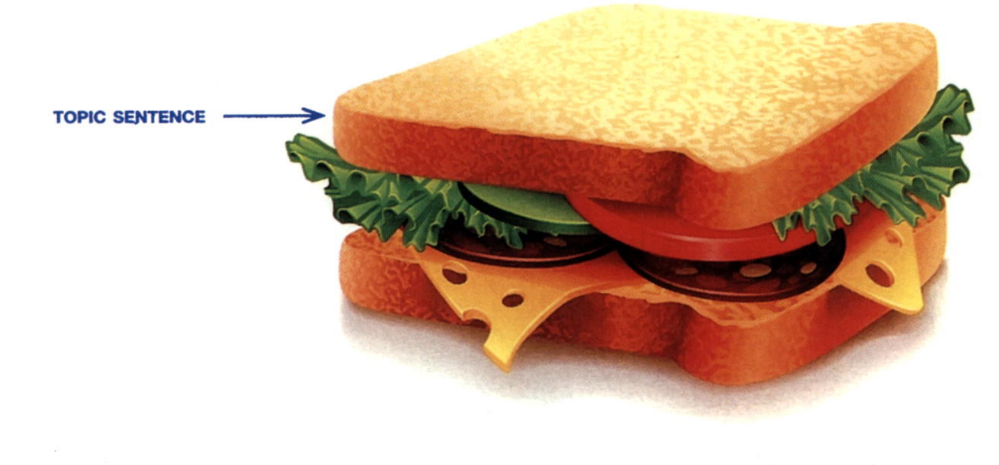
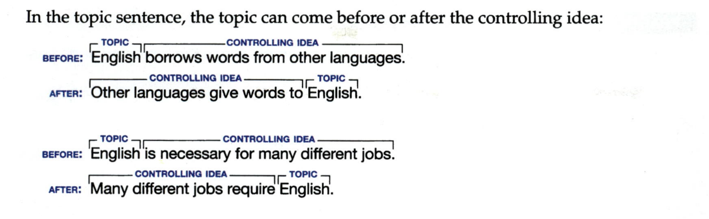
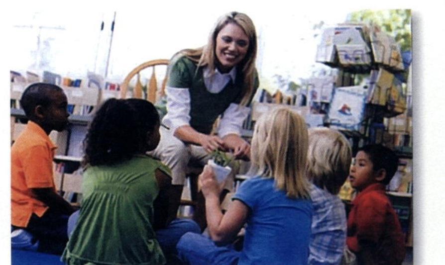

You learned in Chapter 1 that a paragraph is a group of sentences about one topic. A paragraph should have three main parts: a topic sentence, supporting sentences (the body), and a concluding sentence.
In this chapter, you will study each of these parts in more detail. You will also work with and then write paragraphs that use an organization pattern known as listing order. Then you will learn about compound sentences to help you combine your ideas more effectively.
To help you get ideas for your paragraphs, you will first do some prewriting.
There are many different prewriting techniques that you can use to get ideas to write about. In this chapter you will use clustering.
Clustering is a prewriting technique that allows you to brainstorm and develop your ideas with the help of a diagram called a cluster. Here is how to do it.
Begin by writing your topic in the middle of your paper. Draw a circle around it. Then think of ideas related to the topic. Write words or short phrases in circles around the topic and connect them with lines to the main circle. Write down every idea that comes into your mind. Don't stop to worry if an idea is a good one or not.

Next, think about the word or phrase in each circle, and add ideas that are related to it. As before, draw circles around each idea and draw lines to connect the ideas. From these clusters, or groups of circles, you can begin to see which ideas to use and which to delete. Keep the clusters that have the most circles, and cross out the ones that didn't produce related ideas.

Later in the chapter, you will look at another prewriting technique that will help you further organize and develop your ideas after you get them down on paper in a cluster (see Outlining on page 56).
PAGE 37A Create a cluster for a job you have or would like to have. Use the chart to give you ideas about the characteristics and abilities that the job requires.
| Characteristics and Abilities | ||
|---|---|---|
| Adjectives | Nouns | Phrases |
| creative | creativity | can give clear instructions |
| dedicated | dedication | can manage people well |
| dependable | dependability | has good communication skills |
| enthusiastic | enthusiasm | is a good public speaker |
| friendly | friendliness | is good at math |
| intelligent | intelligence | is willing to work hard |
| knowledgeable | knowledge | likes traveling |
| organized | organization | works well with children |
| patient | patience | works well with coworkers |
| self-confident | self-confidence | writes well |
B Share your cluster with a partner. Discuss ways to expand it. Then talk about which ideas you might want to cut out. You will use this cluster in the Try It Out! activity on page 57.
Organization is one of the most important writing skills. A well-organized paragraph is easy to read and understand because the ideas are in a recognizable pattern. Listing order is one of the patterns that writers often use in English. In a listing-order paragraph, you divide the topic into separate points. In the paragraph, you discuss one point, then another point, then a third point, and so on.
There are three keys to writing a listing-order paragraph:
The writing model is about qualities that good flight attendants have.
Work with a partner or in a small group. Read the model. Then answer the questions.
✎ Writing Model
Good flight attendants have three important characteristics. First of all, they are very friendly. They enjoy greeting passengers and making them feel comfortable. Sometimes passengers are quite afraid of flying. Friendly flight attendants are good at talking to them and helping them feel calm. For example, they can explain strange noises made by the aircraft. Second, good flight attendants are self-confident. They can give clear instructions to passengers, and they must be rather firm so that passengers obey them. This characteristic is especially important in emergencies. Third, good flight attendants are fairly strong. They have to push heavy carts of food and drinks up and down the aisles. They also have to open and close the airplane's extremely heavy doors. In short, good flight attendants are friendly, self-confident, and strong.
We can describe how strong a characteristic is by using words like very and extremely.
| He is a very hard worker. | They are exceptionally skilled. |
| She is fairly good at the job. | We are quite sure about it. |
These words are known as intensifiers because they intensify (or strengthen) the meaning of the words they describe. The diagram shows the relative weakness and strength of these intensifiers:

A Look at the intensifiers in the diagram above. Find and underline them in the writing model. Then circle the word that each one intensifies.
First of all, they are very friendly.
B Use a variety of intensifiers from the diagram above to complete these sentences about yourself.
C Discuss your sentences from Part B with a partner. Give examples of each characteristic you describe.
In Chapter 1, you learned that a paragraph has three parts: a topic sentence, supporting sentences, and a concluding sentence. Now you will study each part of a paragraph in more detail.
The most important sentence in a paragraph is the topic sentence. It is called the topic sentence because it tells readers what the main idea of the paragraph is. In other words, it tells readers what they are going to read about. The topic sentence is usually the first sentence in a paragraph. It is the top piece of bread in our paragraph "sandwich."

A topic sentence has two parts: 1) a topic, which tells what the paragraph will be about, and 2) a controlling idea, which tells what the paragraph will say about the topic. It tells the reader: This paragraph will discuss these things—and only these things—about this topic.
For example, the topic of the writing model on page 38 is good flight attendants. What will the paragraph say about good flight attendants? The controlling idea tells us: They have three important characteristics. The paragraph will not talk about their uniforms, their training, or their duties. It will only discuss three important characteristics that good flight attendants have.
Here are examples of topic sentences about English:
English is constantly adding new words.
English borrows words from other languages.
English is necessary for many different jobs.
Note that the topic in each of these examples is the same (English), but the controlling ideas are different. That means that each paragraph will discuss something very different about English.
PAGE 41In the topic sentence, the topic can come before or after the controlling idea:

Look at each group of topic sentences. Circle the topic and underline the controlling idea of each sentence. (You will use these groups of sentences again later.)
Find the topic sentence in each paragraph. Circle the topic and underline the controlling idea.
Libraries
Libraries offer people a wide variety of activities. Reading, of course, is one of the main activities. People browse the shelves to find interesting books to borrow, and they also come to read newspapers and magazines. Using computers is another popular activity. People can read articles online or do research. They can also check their email, shop, or contact their friends on social networking sites. Studying is also a popular activity. Many students come to the library after school to do their homework or study for tests. Some libraries even have areas where students can study together and talk quietly. Indeed, libraries are for much more than simply reading books.

Libraries
Libraries are busy from morning until night in my city. In the morning, you can find retired people and others who aren't working. Some come to borrow books, read newspapers and magazines, and use the computers. Others bring their preschool children in order to read to them or to take part in story hours. In the afternoon, students come to the library. They use the computers, do their homework, or work together on assignments. In the evening, the library is also quite busy. People come to relax after work, and families often visit after dinner. In short, people use libraries all day long for a variety of reasons.
Libraries
A good place to volunteer in your community is a library. First, libraries use volunteers to sort and put books back on the shelves. You can learn how to do this with only a few hours of training. Second, some libraries use volunteers to help people use the computers. You can help people learn how to find information and send emails. In addition, libraries often use volunteers to help out in the children's area. You can lead story hours or help children with special art and reading projects. Finally, libraries use volunteers as tutors. For example, you can volunteer to help students with their homework or become a conversation partner for someone learning English. To sum up, libraries welcome many different kinds of volunteers.
Libraries
Over the past 20 years, many changes have taken place in libraries. First of all, libraries now have computers for people to use. Usually, there is no charge to use the computer for research or for surfing online. Second, there are fewer records, cassette tapes, and video tapes. These have been replaced by CDs and DVDs. In addition, many libraries now have a kiosk where you can check out your books using a computer. Finally, libraries have become more social and community-oriented than they were in the past. They are now places where people come to discuss ideas, learn a craft, study with friends, or join a community group. As our world changes and technology improves, libraries continue to change to meet the needs of the people who use them.
A Read the paragraphs. Circle the letter of the best topic sentence for each one and write it on the line.
Living in a foreign country has a number of benefits. First, living in a foreign country helps you learn another language faster than studying it at school. Second, you can learn directly about the history, geography, and culture of a country. Third, you become especially knowledgeable about different cultures and different ways of living. Fourth, living in a foreign country makes you appreciate your own country more.
a. Living in a foreign country helps you learn.
b. Everyone should live in a foreign country for a while.
c. Living in a foreign country has a number of benefits.
There are two main types of colleges and universities in the United States. Some colleges and universities in the United States are private. Private colleges and universities do not get money from taxes, so they are usually more expensive. Other colleges and universities are public; that is, the citizens of each state pay some of the costs through their taxes. As a result, public colleges are cheaper for students to attend. No matter which type of college you attend—public or private—you can get a good education.
a. There are two main types of colleges and universities in the United States.
b. Public colleges and universities get money from taxes.
c. There are many colleges and universities in the United States.
There are several reasons for attending a small college instead of a large university. One reason for choosing a small college is that classes are small. The average class in a small college is 20 students. Another reason is that it is fairly easy to meet with professors. Professors in small colleges have time to help students and are usually happy to do so. In addition, small colleges are friendly, so new students make friends quickly. For these three reasons, small colleges are better than large universities for many students.
a. Small colleges are friendlier than large universities.
b. There are several reasons for attending a small college instead of a large university.
c. You can get an excellent education at a small college.
Employers look for three main qualities in their employees. First of all, employers want workers to be dependable. That is, they want workers who come to work every day. Second, employers want workers who are quite responsible. Can the boss give the worker a project to do and know that it will be done well? Third, employers look for workers who can work well with others. The ability to get along with coworkers is extremely important to the success of a business. To summarize, employers look for dependable, responsible team players.
a. It is difficult to find good employees these days.
b. Employers read job applications very carefully.
c. Employers look for three main qualities in their employees.
B Read the paragraphs. Then write a topic sentence for each one.
Colleges and universities in the United States offer several different types of degrees. An associate's degree is given for a two-year program of study. Most students at a community college earn an associate's degree. Students at a four-year college or university earn an undergraduate degree, also called a bachelor of arts (BA) or bachelor of science (BS). Some students continue their studies by doing postgraduate work at a university. After several years, they can receive a graduate degree, such as a master's degree (MA) or a doctorate (Ph.D., doctor in philosophy). In short, there are several types of college degrees in the United States.
Good teachers have three main characteristics. First, good teachers know their subject extremely well. That is, a math teacher has advanced education in mathematics, and an English teacher knows a lot about English grammar. Second, good teachers are especially good communicators. This means they know how to present information in ways that students can understand. Third, good teachers are enthusiastic. That is, they can show students that they are interested in their subject and that the subject is quite fun to learn about. To summarize, good teachers have expert knowledge, good communication skills, and enthusiasm for their subject.
PAGE 47There are three kinds of shoppers. The first type of shopper doesn't like to waste time. She knows what she wants to buy and how much she wants to pay. If the store has what she wants, she buys it and leaves. She is a good kind of customer because she doesn't take too much of a salesperson's time. A second type of shopper comes into a store with a general idea of what she wants, listens to the salesperson's suggestions, looks at a few items, and makes a decision. She is also a good kind of customer. A third kind of shopper has no idea what she wants. She spends two hours trying to decide which item to buy. She takes up a lot of a salesperson's time and sometimes doesn't buy anything. In conclusion, the first two types of shoppers are a salesperson's dream, but the third type is a salesperson's nightmare.